Панель Диаграмма компонента предоставляет схему выбранного компонента в трехмерном мире, включая узлы компонентов, поведение, свойства и элементы.
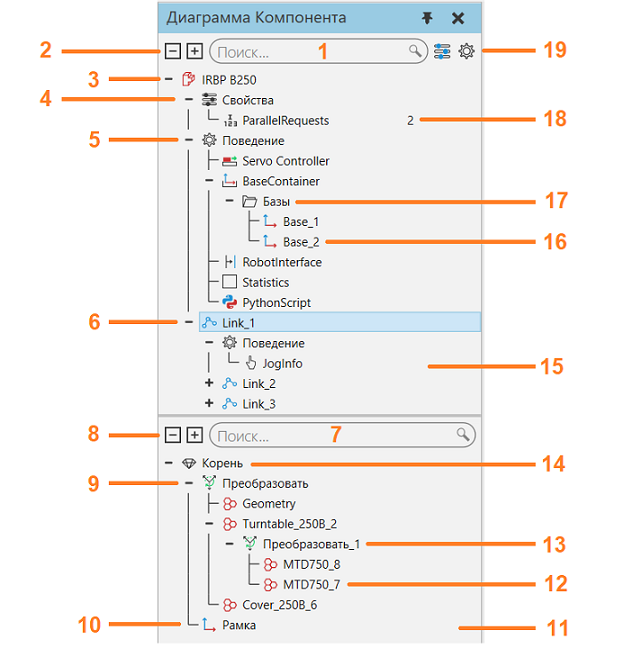
1. |
Поле поиска для дерева узлов компонента |
2. |
Развернуть параметры для дерева узлов компонента |
3. |
Корневой узел выбранного компонента |
4. |
Свойства компонента |
5. |
Поведение узла |
6. |
Дочерний узел (звено) и соединение |
7. |
Поле поиска для дерева элементов узла |
8. |
Развернуть параметры для дерева элементов узла |
9. |
Дерево Элементов |
10. |
Рамка |
11. |
Панель Дерева элементов компонента |
12. |
Подэлемент операции |
13. |
Тип операции элемента |
14. |
Корень активного узла |
15. |
Панель дерева узлов компонента |
16. |
Элемент подэлемента поведения |
17. |
Подэлемент поведения |
18. |
Свойство компонента |
19. |
Фильтры дерева узлов компонента |

Дерево узлов компонента
Структура компонента представляет собой дерево, содержащее узлы. В верхней части дерева находится корневой узел компонента, который содержит свойства компонента. Другие узлы связаны вместе и формируются под корневым узлом. Каждый узел содержит свой набор поведений, которые перечислены вместе с узлом в дереве. Некоторые поведения имеют подэлементы, которые выполняют специальные действия или содержат другие элементы. Например, у некоторых поведений есть порты, позволяющие внутреннюю и внешнюю передачу компонентов между поведениями, тогда как у других поведений есть контейнеры для других типов данных. За исключением корневого узла, каждый узел определяет свое собственное соединение, смещение и механизм перемещения с помощью панели Свойства.
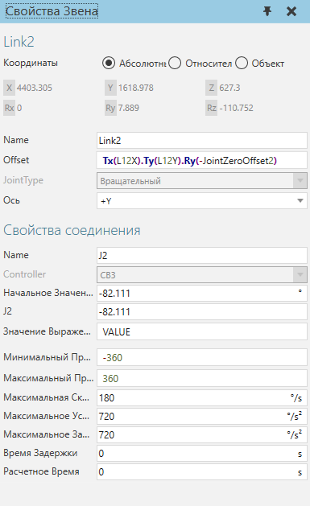
На свойства компонента можно ссылаться в рамках компонента для присвоения значений и записи выражений. Это позволяет сделать геометрию узла и другие свойства параметрическими. На свойства поведения с уникальными именами также можно ссылаться с помощью этого синтаксиса, <ПоведениеИмя>::<ПоведениеСвойство>. Дополнительные свойства соединения добавляются к узлу, когда его соединение назначается контроллеру.
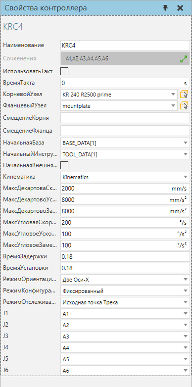
Когда узловая структура компонента отображается в трехмерном мире, смещение узла и его степень свободы отображаются в виде оснастки, формирующей скелет компонента. Узел становится интерактивным благодаря своим свойствам соединения, поэтому, когда соединение узла определено, вы можете использовать команду Взаимодействие для перемещения и взаимодействия с этим соединением.
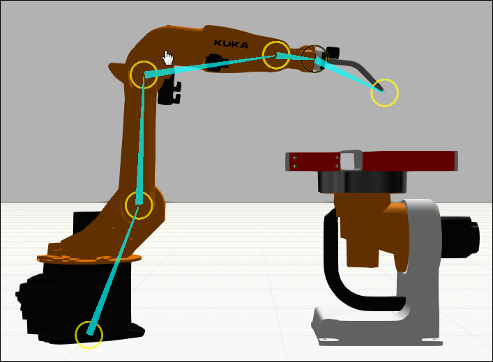
Узлы в компоненте можно присоединить друг к другу, перетащив узел на другой узел на панели Дерево узлов компонента. Это переместит узел и его иерархию, включая поведение и элементы.
Подсказка : При перемещении узла или объекта на панели Диаграммы компонента вы можете удерживать нажатой клавишу SHIFT, чтобы сохранить его положение в мире 3D.
Геометрия выбранного узла будет выделена синим цветом в трехмерном мире. Как правило, структура узлов компонента определяется до разделения и перемещения геометрии в эти узлы. Другой подход заключается в использовании извлечения для формирования новых узлов с выбранной геометрией.
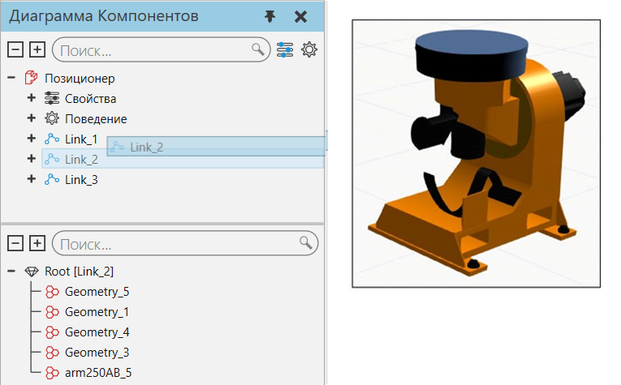
Примечание : Режим Перемещение в Моделировании не повлияет на присоединение узлов к другим узлам. Режим перемещения используется для управления перемещением иерархии выбранного объекта вместе с объектом в трехмерном мире.
Поведения в компоненте могут ссылаться и соединяться друг с другом, и их не обязательно содержать в одном и том же узле. Некоторые поведения используются для добавления функциональности к другому поведению или должны использоваться с другими поведениями для выполнения задач. Например, датчики могут быть подключены к пути и использовать сигналы для уведомления других поведений при обнаружении компонента, движущегося по этому пути.
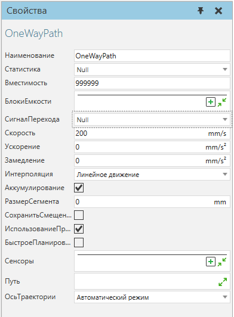
Если вы хотите связать поведение компонента с поведением другого компонента, используйте интерфейсы. Интерфейс — это тип соединителя, который может подключаться к одному или многим другим соединителям. Чтобы сформировать соединение между двумя интерфейсами, они должны быть совместимы и иметь доступные порты. То есть секция и поля интерфейсов должны совпадать друг с другом и поддерживать соединение. Секция подобна электрической вилке, а ее поля подобны контактам этой вилки. Любое количество секций может быть использовано для поддержки различных типов соединений. Порядок и типы полей, используемых в разделе, важны, поскольку они определяют логику коннектора. Например, вы можете соединить выход пути в одном компоненте с входом пути в другом компоненте. Если бы вы делали это внутри компонента, то использовали бы подэлементы порта в типе поведения потока.
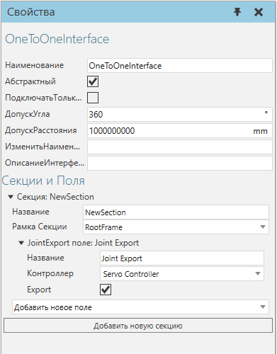
Чтобы компоненты могли физически соединяться друг с другом, их интерфейсы должны подключаться друг к другу в точке обоих компонентов, которая определяется свойством Рамка Секции каждого интерфейса. Чтобы компоненты могли удаленно подключаться друг к другу, их интерфейсы должны быть абстрактными или виртуальными, что определяется свойством Абстрактный каждого интерфейса.
Примечание: Команда PnP используется для управления компонентами (plug and play), например конвейерной линией и инструментом на конце манипулятора, установленным на роботе. Команда Интерфейсы используется для отображения в редакторе соединений, которые могут подключать абстрактные интерфейсы, например, компоненты внешних осей и цифровые сигналы, удаленно подключенные к роботу.
Дерево элементов узла
Геометрия узла представляет собой дерево, содержащее элементы. Наверху дерева находится корневой элемент узла. Другие элементы могут быть связаны вместе и сформированы под корневым элементом. То есть каждый элемент в дереве оценивается, а затем передается его родителю, пока, наконец, не будет достигнут корневой элемент узла. Вот как применяется элемент типа "операция": ее подэлементы оцениваются, затем затрагиваются операцией и, наконец, передаются родительскому элементу.
Оценка дерева признаков является важной концепцией моделирования и проиллюстрирована в следующем примере. Элемент Параллелепипед добавляется к узлу, трансформируется по оси X, а затем трансформируется по оси Z относительно операции, тем самым используя длинну и угол для управления положением Параллелепипеда. Затем Параллелепипед клонируется по оси X, а затем выдавливается по оси Y другой операцией. Наконец, рамка "Локальная СК" и иерархия, к которой принадлежит Параллелепипед, передаются корневой функции его узла.
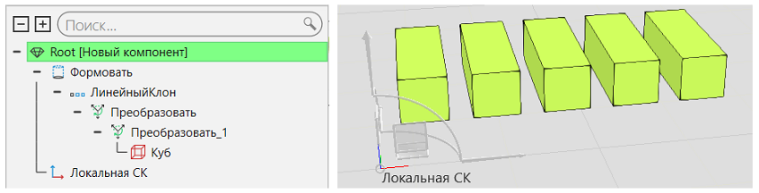
Элементы примитивной геометрии представляют собой простые формы, тогда как объект Геометрия представляет собой контейнер либо свернутой, либо импортированной геометрии. Элемент любого типа можно свернуть и сформировать как элемент геометрии. В этой форме геометрию можно редактировать напрямую и перегруппировать в различные элементы геометрии. Геометрия выбранного объекта и его подэлементов выделяются в 3D мире зеленым и оливковым цветом соответственно.
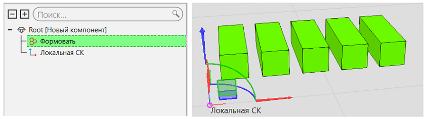
Элемент можно переместить в другой узел в компоненте, перетащив элемент из панели Дерево элементов узла на узел, указанный в панели Дерево узлов компонента. Это переместит элемент и ее иерархию в узел. По умолчанию объект изменит свое местоположение, но вы можете нажать и удерживать SHIFT при перетаскивании объекта, чтобы смещение узла не повлияло на местоположение объекта. Точно так же элементы и узлы могут быть извлечены для формирования новых узлов и компонентов.
Примечание: Режим Перемещение в Моделировании не повлияет на перемещение объектов в разные узлы. Режим перемещения используется для управления перемещением иерархии выбранного объекта вместе с объектом в трехмерном мире.
Редактирование Свойств
Когда вы выбираете свойство в дереве узлов компонентов, отображается панель задач Свойства, которая используется для редактирования этого свойства. В зависимости от типа свойства можно установить ограничения, используя тире (-) для минимального и максимального диапазона, точку с запятой (;) для набора значений и разрыв строки для каждой строки символов. Имя свойства можно использовать для создания вкладки свойств на панели Свойства компонента.Синтаксис <ИмяВкладки::ИмяСвойства> и вкладка будет отображаться, если хотя бы одно свойство, использующее это имя вкладки, видимо и не скрыто в компоненте.
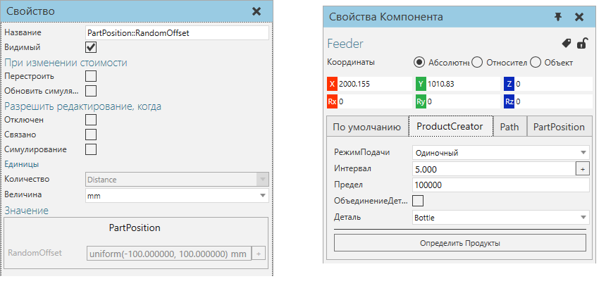
На свойства компонента можно ссылаться в рамках компонента для присвоения значений и записи выражений. Это позволяет сделать геометрию узла и другие свойства параметрическими. В зависимости от типа свойства, вы можете назначить свойству количество и префикс единицы измерения, который будет автоматически основан на глобальной Системы единиц измерения.
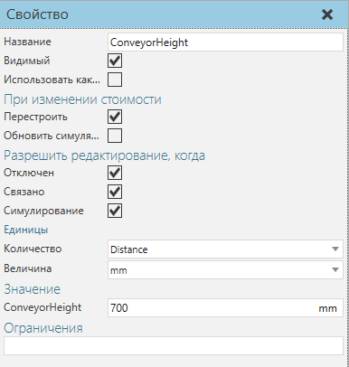
В некоторых случаях вы можете захотеть сформировать свои собственные единицы измерения или вычисления, используя свойства выражения, которые обычно скрыты и/или указаны в свойстве, доступном только для чтения, которое может отображать вычисленное значение выражения.